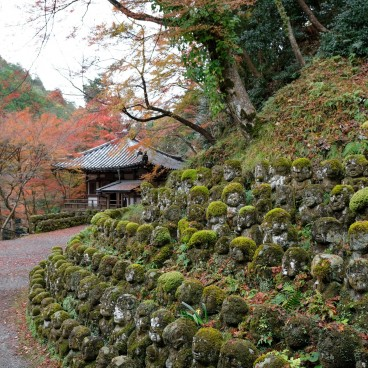
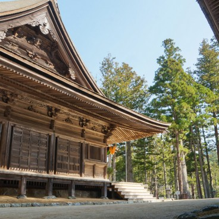
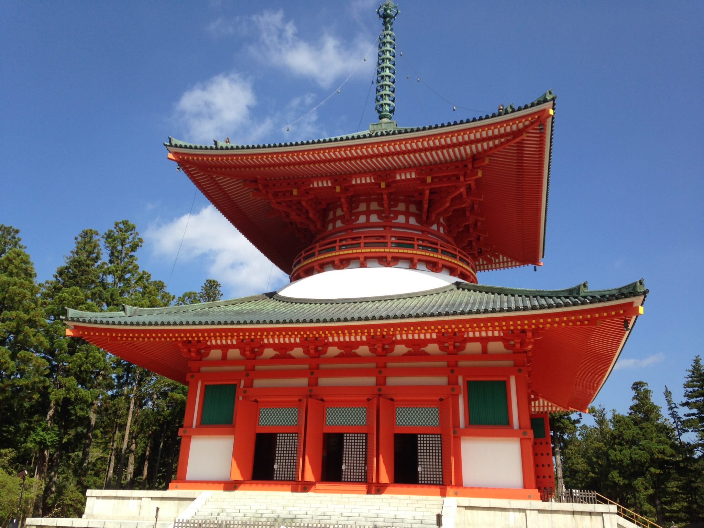
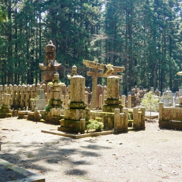
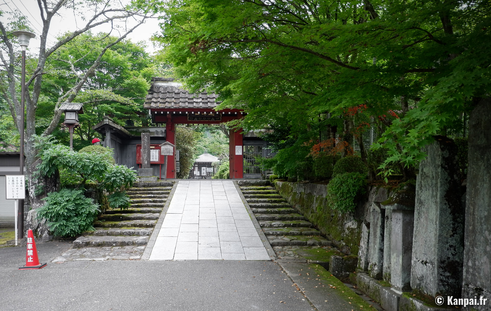

Accueil
L'héritage d'Arachné
Merry go round
Les enfants loup
Le jugement et les préavis
Temple de bambou, Kyoto
Un monde vert et plus sain
Autre projets
Glossaire
Otagi-nenbutsu, l'an 766

Koyasan la montagne sacré, l'an 815

Danjo_garan, l'an 816

Okuno-in, l'an 819

Kanmangafuchi abyss, il y a environ 7000 ans
